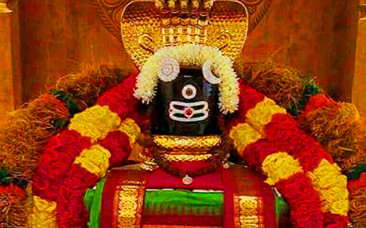

</hr>
<p>The Ramanathaswamy Temple (Rāmanātasvāmi Kōyil) is a Hindu temple dedicated to the Hindu god Shiva located on 
    Rameswaram island in the state of Tamil Nadu, India. It is one of the twelve Jyotirlinga temples. It is one of 
    the 275 Paadal Petra Sthalams, the sacred sites glorified by the Nayanars (Shaivite poet-saints), Appar, 
    Sundarar, and Sambandar, with their songs. According to tradition, the lingam (an aniconic form of Shiva) of the 
    Ramanathaswamy Temple was established and worshipped by Rama before he crossed the bridge called Rama Setu to the 
    island kingdom of Lanka, identified with Sri Lanka. It is one of the Char Dham pilgrimage sites. The temple was 
    expanded during the 12th century by the Pandya Dynasty, and its principal shrine's sanctum was renovated by 
    Jeyaveera Cinkaiariyan and his successor Gunaveera Cinkaiariyan, monarchs of the Jaffna kingdom. The temple has 
    the longest corridor among all the Hindu temples of India. It was built by King Muthuramalinga Sethupathy. 
    The temple is considered a pilgrimage site for Shaivites, Vaishnavites, and Smartas.</p>


